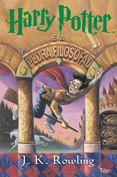
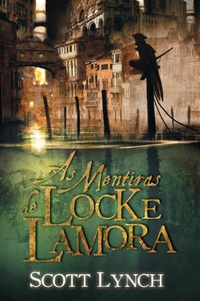

|  |
Harry Potter e a Pedra Filosofal
Autora: J. K. Rowling
Conheça Harry, filho de Tiago e Lílian Potter, feiticeiros que foram assassinados por
um poderosíssimo bruxo, quando ele ainda era um bebê. Com isso, o menino acaba sendo levado
para a casa dos tios que nada tinham a ver com o sobrenatural pelo contrário. Até os 10 anos,
Harry foi uma espécie de gata borralheira: maltratado pelos tios, herdava roupas velhas do primo
gorducho, tinha óculos remendados e era tratado como um estorvo. No dia de seu aniversário de 11
anos, entretanto, ele parece deslizar por um buraco sem fundo, como o de Alice no país das
maravilhas, que o conduz a um mundo mágico. Descobre sua verdadeira história e seu destino:
ser um aprendiz de feiticeiro até o dia em que terá que enfrentar a pior força do mal, o homem
que assassinou seus pais, o terrível Lorde das Trevas.

|
|
Uma Dobra no Tempo
Autora: Madeleine Lengle
Era uma noite escura e tempestuosa; a jovem Meg Murry e seu irmão mais novo, Charles Wallace,
descem para fazer um lanche tardio quando recebem a visita de uma figura muito peculiar.
“Noites loucas são a minha glória”, diz a estranha misteriosa. “Foi só uma lufada que me pegou
de jeito e me tirou da rota. Descansarei um pouco e seguirei meu rumo. Por falar em rumos, meu
doce, saiba que o tesserato existe, sim.”.
O que seria um tesserato? O pai de Meg bem andava experimentando com a quinta dimensão quando
desapareceu misteriosamente... Agora, com a ajuda de três criaturas muito peculiares, chegou o
momento de Meg, seu amigo Calvin e Charles Wallace partirem em uma jornada para resgatá-lo. Uma
jornada perigosa pelo tempo e o espaço.

|
|
A Rainha Vermelha
Autora: Victoria Aveyard
O mundo de Mare Barrow é dividido pelo sangue: vermelho ou prateado. Mare e sua família são vermelhos:
plebeus, humildes, destinados a servir uma elite prateada cujos poderes sobrenaturais os tornam
quase deuses.
Mare rouba o que pode para ajudar sua família a sobreviver e não tem esperanças de escapar do
vilarejo miserável onde mora. Entretanto, numa reviravolta do destino, ela consegue um emprego
no palácio real, onde, em frente ao rei e a toda a nobreza, descobre que tem um poder misterioso
Mas como isso seria possível, se seu sangue é vermelho?
Em meio às intrigas dos nobres prateados, as ações da garota vão desencadear uma dança violenta
e fatal, que colocará príncipe contra príncipe - e Mare contra seu próprio coração.

|
|
Cidade dos Ossos (Os Instrumentos Mortais)
Autora: Cassandra Clare
Um mundo oculto está prestes a ser revelado... Quando Clary decide ir a Nova York se divertir numa discoteca,
nunca poderia imaginar que testemunharia um assassinato - muito menos um assassinato cometido por
três adolescentes cobertos por tatuagens enigmáticas e brandindo armas bizarras. Clary sabe que
deve chamar a polícia, mas é difícil explicar um assassinato quando o corpo desaparece e os
assassinos são invisíveis para todos, menos para ela. Tão surpresa quanto assustada, Clary aceita
ouvir o que os jovens têm a dizer... Uma tribo de guerreiros secreta dedicada a libertar a terra de
demônios, os Caçadores das Sombras têm uma missão em nosso mundo, e Clary pode já estar mais
envolvida na história do que gostaria.

|
|
Os Garotos Corvos (A Saga dos Corvos)
Autora: Maggie Stiefvater
Todo ano, na véspera do Dia de São Marcos, Blue Sargent vai com sua mãe clarividente até uma igreja
abandonada para ver os espíritos daqueles que vão morrer em breve. Blue nunca consegue vê-los —
até este ano, quando um garoto emerge da escuridão e fala diretamente com ela.
Seu nome é Gansey, e ela logo descobre que ele é um estudante rico da Academia Aglionby, a escola
particular da cidade. Mas Blue se impôs uma regra: ficar longe dos garotos da Aglionby. Conhecidos
como garotos corvos, eles só podem significar encrenca.
Gansey tem tudo — dinheiro, boa aparência, amigos leais —, mas deseja muito mais. Ele está em uma
missão com outros três garotos corvos: Adam, o aluno pobre que se ressente de toda a riqueza ao
seu redor; Ronan, a alma perturbada que varia da raiva ao desespero; e Noah, o observador
taciturno, que percebe muitas coisas, mas fala pouco.
Desde que se entende por gente, as médiuns da família dizem a Blue que, se ela beijar seu
verdadeiro amor, ele morrerá. Mas ela não acredita no amor, por isso nunca pensou que isso seria
um problema. Agora, conforme sua vida se torna cada vez mais ligada ao estranho mundo dos garotos
corvos, ela não tem mais tanta certeza.
|
 |
As Mentiras de Locke Lamora
Autor: Scott Lynch
O Espinho é uma figura lendária: um espadachim imbatível, um especialista em roubos vultosos, um fantasma
que atravessa paredes. Metade da excêntrica cidade de Camorr acredita que ele seja um defensor dos pobres,
enquanto o restante o considera apenas uma invencionice ridícula.
Franzino, azarado no amor e sem nenhuma habilidade com a espada, Locke Lamora é o homem por trás do fabuloso
Espinho, cujas façanhas alcançaram uma fama indesejada. Ele de fato rouba dos ricos (de quem mais
valeria a pena roubar?), mas os pobres não veem nem a cor do dinheiro conquistado com os golpes,
que vai todo para os bolsos de Locke e de seus comparsas: os Nobres Vigaristas.
O único lar do astuto grupo é o submundo da antiquíssima Camorr, que começa a ser assolado por um
misterioso assassino com poder de superar até mesmo o Espinho. Matando líderes de gangues, ele
instaura uma guerra clandestina e ameaça mergulhar a cidade em um banho de sangue. Preso em uma
armadilha sinistra, Locke e seus amigos terão sua lealdade e inteligência testadas ao máximo e
precisarão lutar para sobreviver.

|